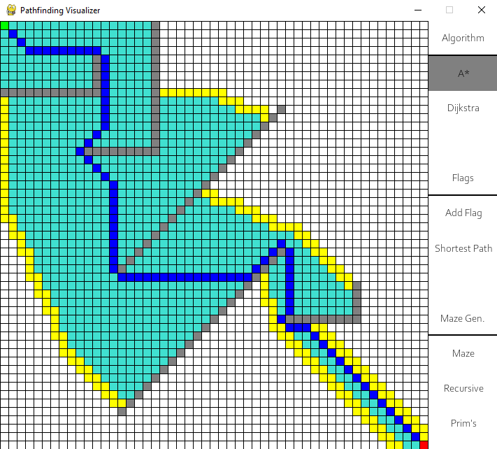
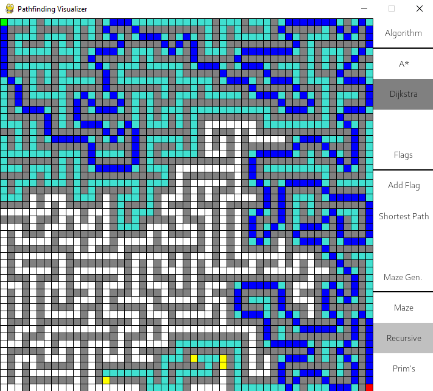
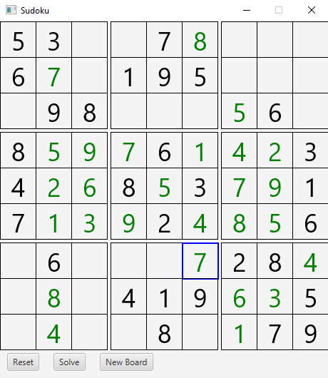

Python

Node Graph
Visualization tool applying algorithms from combinatorial optimization to explore features of directed and undirected graphs


Python
Pathfinding Visualizer
Visualization tool for A* and Dijkstra pathfinding algorithms with options to create obstacles, set checkpoints and generate mazes

Java
Sudoku Solver
Java program using javafx that visually solves the puzzle sudoku using backtracking algorithm